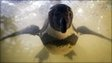
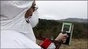

~RS~q~RS~~RS~z~RS~40~RS~)

World News
Special Reports
More Special Reports:
BBC World Service
News and analysis in 32 languages
Languages continued (2 of 4)
Languages continued (3 of 4)
Languages continued (4 of 4)
Watch/Listen
 Giant pillow fight - it's Odd Box
Giant pillow fight - it's Odd BoxFeatures & Analysis
-
'Iron Dome'
Israel's missile defence system may be a game changer
-
Day in pictures
Striking images from around the world
-
Ring thing
When did most men start wearing wedding bands?
-
It's quiz time!
Arnie said he'd be back - but what as?
-
LOL's triumph
How did a little web acronym spread so fast?
-
Driving on ice
No seatbelts allowed on Europe's longest road over frozen sea From our own correspondent
-
Unloved US
Rage against America breaks out in Afghanistan and Pakistan
Elsewhere on BBC News
-
An app for that
In a competitive, developing marketplace will apps remain a feature of business?
Market Data
Last Updated at 17:56 ET
| Market index | Current value | Trend | Variation | % variation |
|---|---|---|---|---|
| Dow Jones | 12380.05 | Down | -29.44 | -0.24% |
| Nasdaq | 2780.41 | Down | -15.72 | -0.56% |
| S&P 500 | 1328.17 | Down | -5.34 | -0.40% |
| FTSE 100 | 6055.75 | Up | 48.38 | 0.81% |
| Dax | 7217.02 | Up | 38.24 | 0.53% |
| BBC Global 30 | 5727.44 | Up | 2.06 | 0.02% |
Programmes
-
Click
How radiation level readings from Japan are being crowd-sourced
BBC World Service
From Our Own Correspondent
Kate Adie hosts stories from reporters around the world.
Newshour
Who bombed Libyan rebels? Brazil school shooting; George Washington's belongings auctioned